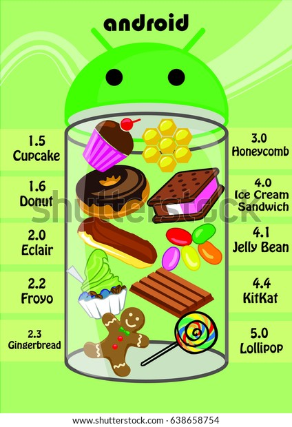
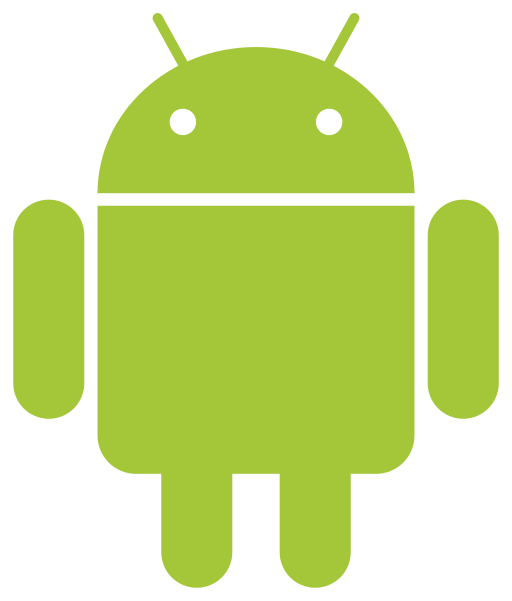
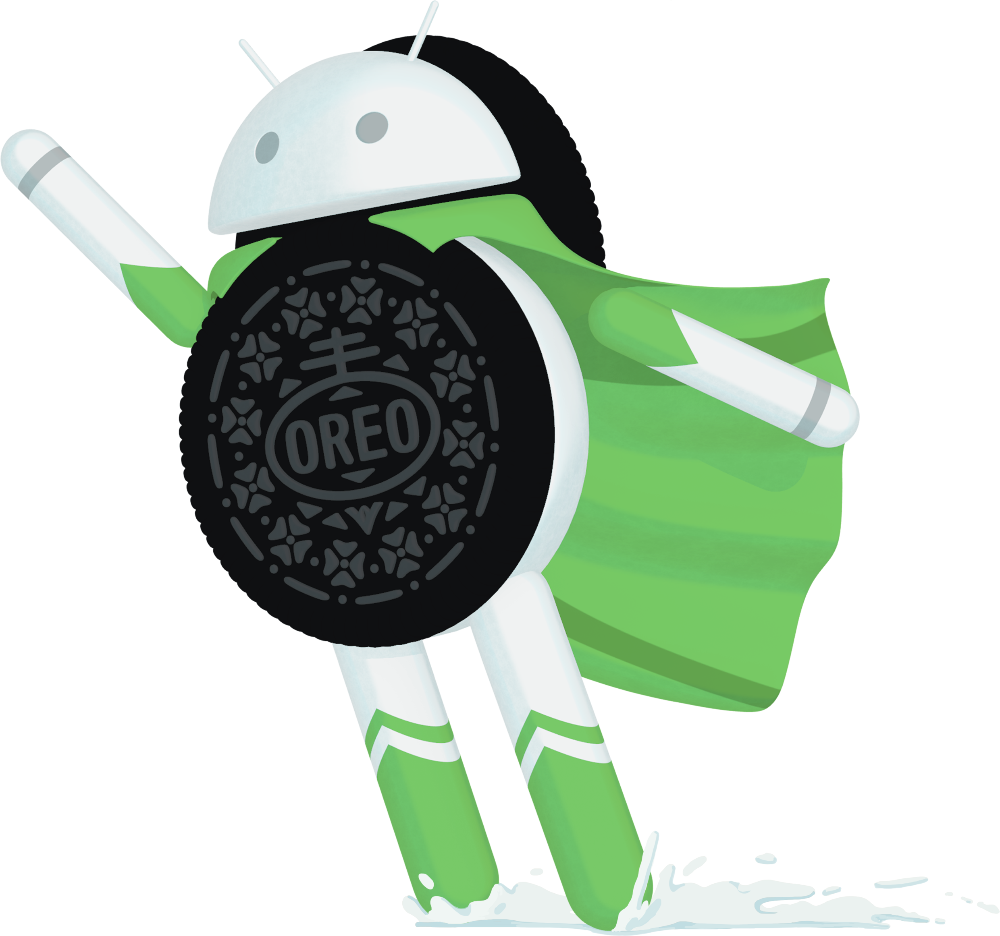
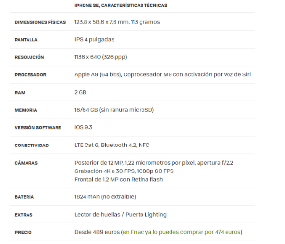

La historia de android comienza en octubre de 2003, cuando se funda Android Inc por : Rich Miner, Nick Sears, Chris White y Andy Rubin.,, con el objetivo de mejorar el uso del sistema operativo dentro de los teléfonos móviles.

No fue hasta 2005 que Google compró Android Inc, y los fundadores originales se quedaron para continuar desarrollando el sistema operativo cons usu nuevos propietarios. Se tomó la decisión de utilizar linux como base del sistema operativo Android, lo cual significaba que el sistema operativo podría ofrecerse a terceros fabricantes de teléfonos móviles de forma gratuita. Google y el equipo de Android pensaban que podían ganar dinero ofreciendo otros servicios que usaban el sistema operativo, incluidas las aplicaciones.
El logotipo de Android fue diseñado en 2007 por Irina Blok, una diseñadora de Google, y optó por un extravagante diseño, una mezcla de alien y robot.
Una cosa que decidieron fue hacer del robot Android en sí un proyecto de código abierto, en vez de patentarlo como hacen muchas otras compañías.
El 5 de noviembre de 2007 la Open Handset Alliance se estrenó con el fin de desarrollar estándares abiertos para dispositivos móviles. Junto con la formación de la Open Handset Alliance, la OHA estrenó su primer producto, Android, una plataforma para dispositivos móviles construida sobre la versión 2.6 del kernel de Linux.

Actualmente tiene una gran comunidad de desarrolladores creando aplicaciones para extender la funcionalidad de los dispositivos. A principios de 2018 se superaban ya los dos millones de aplicaciones disponibles en Google Play Store, la tienda de aplicaciones oficial de Android; a estas habría que añadir las disponibles en otras tiendas no oficiales
1-Apple Pie
2-Banana Bread
3-Cupcake
4-Donut
5-Eclair
6-Froyo
7-Gingerbread
8-Honeycomb
9-Ice Cream Sandwich
10-Jelly Bean
11-KitKat
12-Lollipop
13-Marshmallow
14-Nougat
15-Oreo
16-Pie
17-Android 10
18-Android 11
19-Android 12
-1ª versión sin nombre de postre
-1ª vez Android no tiene botones “Inicio” y “Atrás”
-Tema oscuro
-Usuario tienen más control sobre los permisos de aplicaciones
-Versión muy estable y refinada del SO
-Gran personalización de funciones a nivel usuario
-Introduce el autocompletado de contraseña
-Android SO moderno
-Introduce la interfaz de usuario Holo a móviles
-Notificaciones eliminables
-Desbloqueo facial
-Crecimiento real de Android y Google
-Comunicación.(Puedes comunicarte mediante texto o voz desde tu dispositivo)

-Reproductor.(Unas de sus muchas aplicaciones es la de reproducción multimedia,la cual nos permite ejecutar pistas de audio y video)
-Camara de foto y video.(Android nos permite fotografiar o grabar sin necesidad de llevar una cámara de fotos encima)

-Alarmas y recordatorios.(Entre muchas de sus aplicaciones la más popular es la de alarmas o recordatorios, las cuales nos facilitan y ayudan a organizarnos)

-Uso de apps.(Podemos descargar y ejecutar cualquiera de las aplicaciones que dispongamos en nuestra tienda android,siendo de pago o gratis)

-Salud.(A día de hoy también tiene una gran importancia ya que con el transcurso de los años se han ido creando y optimizando aplicaciones para velar por la salud del usuario,ya sea por problemas cardiovasculares como problemas con la alimentación y el ejercicio)
Android es uno de los sistemas operativos móviles más queridos del mercado. En la actualidad podemos encontrarnos teléfonos, tablets, relojes, televisiones, entre otros muchos:
| Móviles | Android nació para los teléfonos móviles y es el uso mayoritario de android. |
| Tablets | También encontramos Android en tablets incluso con versiones del SO específicas para ellas. |
| Relojes | Android se encuentra en relojes desde 2014 gracias a Android Wear. |
| Televisores | Las televisiones no podían ser menos y también Android llegó a ellas a la vez que a los relojes. |
| Consolas de sobremesa | Cuya intentó implementar Android a consolas pero no funcionó muy bien. |
| Ordenadores portátiles | El modelo de portátil Android más conocido es el Slatebook 14. |
| Cámaras | Samsung Galaxy Zoom es un modelo de móvil/cámara que no llegó a calar del todo. |
| Proyectores | Android se usa en muchos proyectores ya que es genial para contenido multimedia. |
| GPS | El GPS llego a Android en el móvil T-Mobile G1, el cual fue lanzado en 2008. |
| Coches | Android Auto permite que los móviles con Android puedan operar en el panel de control principal del automóvil. |
| Impresoras | Permiten la impresión de forma online de manera sencilla, llegando a poder imprimir desde drive. |
Estas son las principales diferencias entre el sistema operativo Android y el sistema operativo iOS:
A continuacion, y como dato curioso para comparar, he encontrado los requisitos minimos que necesitan los dispositivos para utilizar el sistema operativo Android e iOS en su ultima version
iOs saca actualizaciones de su sistema operativo teniendo en cuenta su ultima gama de moviles y sus caracteristicas. Por ejemplo, el movil mas antiguo de Iphone que salio al mercado y puede soportar el sistema operativo es el Iphone SE de primera generacion:
